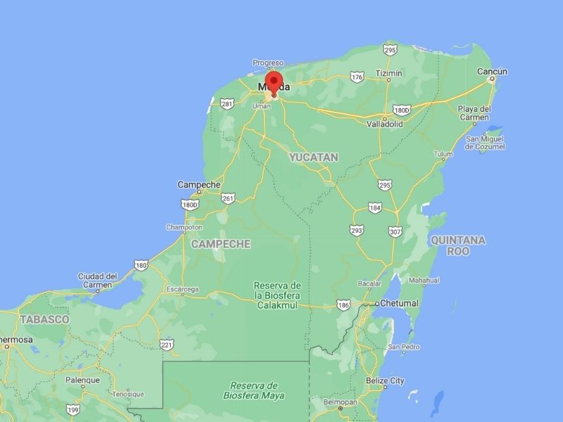
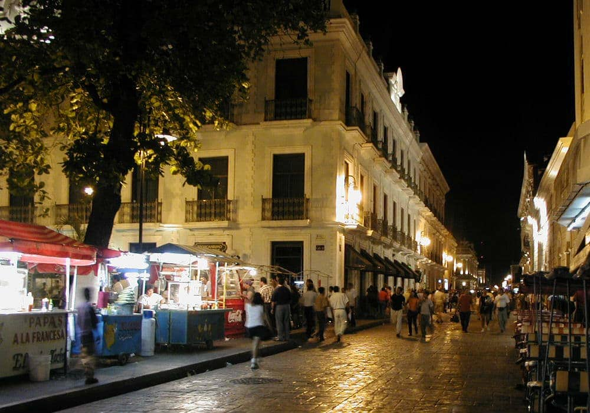

Mérida, Yucatán, fue fundada el 6 de enero de 1542 por el conquistador español Francisco de Montejo, quien la estableció sobre las ruinas de la antigua ciudad maya de T’ho. Esta fundación se realizó con la intención de consolidar el dominio español en la región y fomentar el desarrollo económico y social en el área.
Durante el período colonial, Mérida se convirtió en un importante centro administrativo y comercial en la península de Yucatán. Su riqueza arquitectónica y cultural comenzó a florecer con la construcción de iglesias y edificios públicos, muchos de los cuales se erigen sobre antiguos templos mayas.
En el siglo XIX y principios del XX, Mérida experimentó un auge económico gracias al desarrollo de la industria henequenera, que convirtió a la ciudad en un próspero centro económico. La riqueza generada por la producción de henequén contribuyó a la construcción de lujosas mansiones y a la expansión de la infraestructura urbana. A medida que avanzó el siglo XX, Mérida se consolidó como un centro cultural y turístico, manteniendo su herencia histórica y cultural mientras abrazaba la modernidad.
En la actualidad, Mérida, Yucatán, es una vibrante ciudad que combina su rica herencia histórica con un dinamismo moderno. Conocida como la "Ciudad Blanca" por sus edificios de fachadas claras, Mérida destaca por su arquitectura colonial, sus animados mercados y una vida cultural rica que incluye festivales, museos y eventos locales. La ciudad es un centro de actividad económica y turística, ofreciendo una mezcla de tradición y modernidad en su gastronomía, con platos típicos yucatecos, y en su infraestructura, que abarca desde modernos centros comerciales hasta bien conservados sitios históricos.
